02: Scaling Tabular Workflows with Polars ⚡
Links & Self-Guided Review
- Polars User Guide – official docs with eager + lazy API examples
- Apache Arrow Columnar Format – why columnar memory layouts matter
- Parquet Fundamentals – format internals and predicate pushdown
- Real Python: Working With Large CSVs – diagnosing
MemoryError - VS Code: Python performance tips – environment setup + profiling
scripts/fetch_xkcd_2x.py– grab XKCD comics (seeall_xkcd.csvindex) for lecture visuals
Why Memory Limits Sneak Up On Us
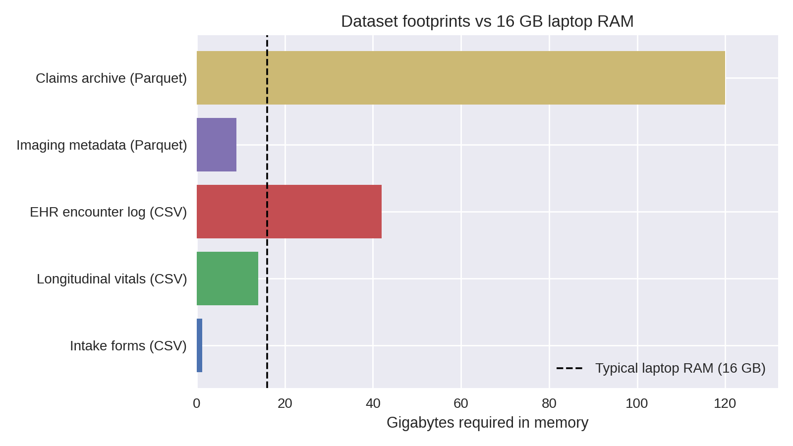
Chart shows estimated in-memory size; raw on-disk sizes are in the table below.
Health datasets outgrow laptop RAM quickly: a handful of CSVs with vitals, labs, and encounters can exceed 16 GB once loaded. Attempting to “just read the file” leads to system thrash, swap usage, and eventually Python MemoryErrors that interrupt the workflow.
Laptop specs vs dataset footprints
| Dataset | Typical raw size | In-memory pandas size | Fits on 16 GB laptop? |
|---|---|---|---|
| Intake forms (CSV) | 250 MB | ~1.2 GB (due to dtype inflation) | ✅ |
| Longitudinal vitals (CSV) | 6 GB | ~14 GB | ⚠️ borderline |
| EHR encounter log (CSV) | 18 GB | ~42 GB | ❌ |
| Imaging metadata (Parquet) | 9 GB | ~9 GB | ⚠️ if other apps closed |
| Claims archive (partitioned Parquet) | 120 GB | streamed | ✅ (with streaming) |
Warning signs you are hitting RAM limits
toporActivity Monitorshows Python ballooning toward total RAM- Fans spin, everything slows, disk swap spikes
- OS kills kernel/terminal;
MemoryErrororKilled: 9messages - Notebook kernel restarts when running seemingly “simple” cells
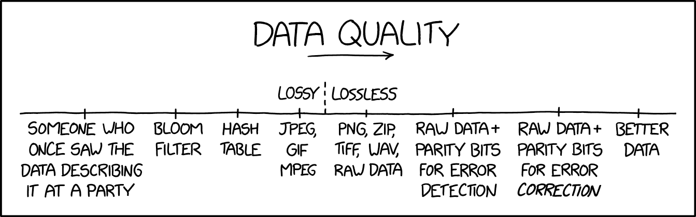
If the rows are literally on fire, start fixing quality before scaling anything else.
Grab a quick sense of scale (du -sh data/, wc -l big_file.csv) before committing to a full load—if numbers dwarf your RAM, pivot immediately.
Quick pivot when pandas crashes
- Stop the read once memory spikes—killing the kernel only hides the problem.
- Profile the file size (
du -sh,wc -l) so you know what you are up against. - Convert the source to Parquet or Arrow once using a machine with headroom.
- Rebuild the transform with Polars lazy scans (
pl.scan_*) and streaming collects. - Cache intermediate outputs so future runs never touch the raw CSV again.
Code Snippet: Pushing pandas too far
import pandas as pd
from pathlib import Path
PATH = Path("data/hospital_records_2020_2023.csv")
try:
df = pd.read_csv(PATH)
except MemoryError:
raise SystemExit(
"Dataset too large: consider chunked loading or Polars streaming"
)This is the moment to stop fighting pandas and switch strategies (column pruning, chunked readers, or a Polars lazy pipeline) before debugging phantom crashes.
Polars Essentials
Columnar storage (row vs column)
Columnar formats keep same-typed values together, which makes scans faster and cheaper than row-wise text formats.
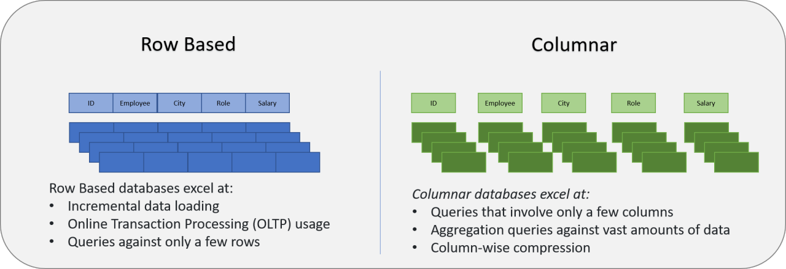
Why this matters for Polars + Parquet:
- Projection pushdown: read only the columns you select.
- Predicate pushdown: skip row groups whose stats fail the filter.
- Compression: contiguous same-typed values compress more effectively.
Prompt: If you only need patient_id + heart_rate, what does a columnar engine read vs a CSV reader?

SIMD works best when values are contiguous in memory, which columnar layouts enable.
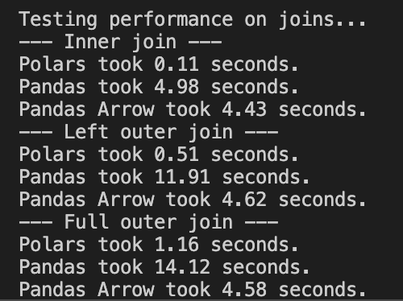
Example benchmark on a 12M-row vitals dataset on a single laptop; exact timings vary by hardware and data layout.
pandas is ubiquitous and a great default; Polars is often adopted case-by-case when you hit real constraints (runtime, memory, I/O).
Polars is pandas without the hidden index and with a Rust engine under the hood. Two mindshifts:
- Everything is explicit columns—no surprise index alignment.
- Expressions replace per-row Python—filters, casts, joins compile to vectorized Rust kernels.
Reference Card: pandas → Polars translation
| To do this | You know this in pandas | Do this in Polars |
|---|---|---|
| Load a CSV | pd.read_csv("file.csv") |
pl.read_csv("file.csv") (eager preview) |
| Lazy scan (build plan) | (no equivalent) | pl.scan_csv("file.csv") (build plan, nothing runs yet) |
| Filter rows | df[df.age > 65] |
.filter(pl.col("age") > 65) |
| Add/transform columns | df.assign(bmi=...) |
.with_columns(pl.col("weight") / pl.col("height")**2) |
| Aggregate by group | df.groupby("cohort").agg(...) |
.group_by("cohort").agg([...]) |
| Join tables | df.merge(dim, on="id") |
.join(dim, on="id") |
| Stream-collect results | (n/a) | .collect(engine="streaming") |
scan_csv and scan_parquet
Lazy scans build a query plan without loading the full dataset. Use them for large files, globs, and any pipeline you want to keep in streaming mode.
Reference Card: scan_csv / scan_parquet
- Function:
pl.scan_csv(...),pl.scan_parquet(...) - Purpose: Create a
LazyFramefor pushdown + optimization - Key Parameters:
try_parse_dates(CSV): parse date-like strings during scancolumns(both): read only specific columnsdtypes/schema(CSV): set column types and avoid inference
- Returns:
LazyFrame
Code Snippet: Lazy scan + schema preview
import polars as pl
sensor = pl.scan_parquet("data/sensor_hrv/*.parquet")
vitals = pl.scan_csv("data/vitals/*.csv", try_parse_dates=True)
print(sensor.collect_schema())
print(vitals.collect_schema())Reference Card: collect_schema()
- Method:
LazyFrame.collect_schema() - Purpose: Retrieve column names and data types without executing the full query
- Returns:
Schema(dict-like mapping of column names → dtypes) - Why use it:
- Avoids the “resolving schema is expensive” warning you get from
.schemaon aLazyFrame - Fast introspection—validates your pipeline before collecting
- Confirms dtypes after casts or transforms
- Avoids the “resolving schema is expensive” warning you get from
pl.DataFrame()
Use pl.DataFrame() to build small in-memory tables for benchmarks, checks, or plotting.
Reference Card: pl.DataFrame
- Function:
pl.DataFrame(...) - Purpose: Create a Polars
DataFramefrom Python data - Key Parameters:
data: dict of columns or list of rowsschema: optional column names/types
- Returns:
DataFrame
Code Snippet: Small benchmark table
import polars as pl
bench = pl.DataFrame(
{
"engine": ["polars (streaming)", "pandas (pyarrow + in-mem groupby)"],
"seconds": [19.7, 318.0],
"memory_mb": [0.82, 52051.3],
}
)select() and filter()
select() chooses columns (or expressions); filter() keeps rows that match a boolean expression. Use both early for pushdown.
Reference Card: select / filter
- Select:
.select([col1, col2, expr.alias("new")]) - Filter:
.filter(pl.col("...") >= 0) - Notes: chained filters are fine; projections + filters often push down to the scan
Code Snippet: Projection + predicate pushdown
import polars as pl
vitals = (
pl.scan_parquet("data/vitals/*.parquet")
.filter(pl.col("facility").is_in(["UCSF", "ZSFG"]))
.filter(pl.col("timestamp") >= pl.datetime(2024, 1, 1))
.select([
"patient_id",
"timestamp",
"heart_rate",
pl.col("bmi").cast(pl.Float32).alias("bmi"),
])
)with_columns() and expression helpers
Expressions let you define column logic once and push it down into the engine.
Reference Card: Expression toolbox
- Core:
pl.col(...),pl.lit(...),.with_columns([...]) - String + list:
.str.split(...),.list.get(...),pl.concat_str([...]) - Datetime:
.str.strptime(...),.dt.date(),.dt.hour(),.dt.year(),.dt.month() - Filtering:
.is_in(...),.is_between(...) - Types + bounds:
.cast(...),.clip(lower_bound=..., upper_bound=...)
Code Snippet: Derive keys + time parts
import polars as pl
sensor = (
pl.scan_parquet("data/sensor_hrv/*.parquet")
.with_columns([
pl.concat_str([pl.lit("USER-"), pl.col("device_id").str.split("-").list.get(1)]).alias("user_id"),
pl.col("ts_start").dt.date().alias("date"),
pl.col("ts_start").dt.hour().alias("hour"),
])
.filter(pl.col("hour").is_between(22, 23) | pl.col("hour").is_between(0, 6))
)
vitals = (
pl.scan_csv("data/vitals/*.csv", try_parse_dates=True)
.with_columns([
pl.col("timestamp").str.strptime(pl.Datetime, strict=False).alias("timestamp"),
pl.col("bmi").cast(pl.Float32).clip(lower_bound=12, upper_bound=70).alias("bmi"),
])
)Distinct counts and prefix filters
When you summarize events by site, you often want distinct patients and a quick way to filter code prefixes. Polars gives you both with unique() and string expressions.
| code | starts_with(“E11”) |
|---|---|
| E11.9 | True |
| E11.65 | True |
| I10 | False |
Reference Card: Distinct + prefix helpers
- Distinct rows:
.select([...]).unique()(keeps one row per key combo) - Distinct counts:
.group_by("site_id").agg(pl.n_unique("patient_id")) - Prefix filter:
pl.col("code").str.starts_with("E11") - Null fill:
.with_columns(pl.col("diabetes_patients").fill_null(0)) - Rounding:
.with_columns(pl.col("diabetes_prevalence").round(3))
Code Snippet: Distinct patients + prefix filter
import polars as pl
dx_diabetes = dx_events.filter(pl.col("code").str.starts_with(prefix))
patients_by_site = (
events_filtered.select(["site_id", "patient_id"])
.unique()
.group_by("site_id")
.agg(pl.len().alias("patients_seen"))
)Aside: Data model for health-data workflows
Many health-data pipelines involve multiple sources, repeated measurements, and joins that can accidentally multiply rows. Grain = the unit of observation in a table.
| Table | Grain | Join key(s) | Typical use |
|---|---|---|---|
user_profile |
1 row per user_id |
user_id |
Demographics / grouping |
sleep_diary |
1 row per user_id per day |
user_id, date |
Nightly outcomes |
sensor_hrv |
many rows per device in 5-min windows | derive user_id from device_id; also date from ts_start |
High-volume physiology |
encounters |
many rows per patient_id |
patient_id |
Events/visits to count/stratify |
vitals |
many rows per patient_id |
patient_id (+ time filter) |
Measurements to summarize |
Two practical rules:
- Know the grain before you join (one-to-many joins are normal; many-to-many joins often explode row counts).
- Decide early whether you want “per-patient”, “per-encounter”, or “per-month” outputs, and aggregate to that grain before expensive joins.
group_by + agg + join
Aggregations and joins are the core of most tabular pipelines. Keep joins at the right grain, then summarize.
Reference Card: group_by, agg, join, sort
- Group + aggregate:
.group_by([...]).agg([...]) - Common aggregations:
pl.len(),pl.mean(...),pl.median(...),pl.sum(...),pl.corr(...) - Join:
.join(other, on=..., how=...)(know the join grain) - Order:
.sort([...])(global sort can break streaming)
Code Snippet: Monthly facility summary
encounters = pl.scan_csv("data/encounters/*.csv", try_parse_dates=True)
vitals = pl.scan_csv("data/vitals/*.csv", try_parse_dates=True)
summary = (
vitals.join(
encounters.filter(pl.col("facility").is_in(["UCSF", "ZSFG"])),
on="patient_id",
how="inner",
)
.group_by([
"facility",
pl.col("timestamp").dt.year().alias("year"),
pl.col("timestamp").dt.month().alias("month"),
])
.agg([
pl.len().alias("num_vitals"),
pl.mean("heart_rate").alias("avg_hr"),
pl.mean("bmi").alias("avg_bmi"),
])
.sort(["facility", "year", "month"])
)Code Snippet: pandas vs Polars
import pandas as pd
import polars as pl
## pandas: full load, then work
pandas_result = (
pd.read_csv("data/vitals.csv")
.query("timestamp >= '2024-01-01'")
.groupby("patient_id")
.heart_rate.mean()
)
## polars: lazy scan, stream collect
polars_result = (
pl.scan_csv("data/vitals.csv")
.filter(pl.col("timestamp") >= pl.datetime(2024, 1, 1))
.group_by("patient_id")
.agg(pl.mean("heart_rate").alias("avg_hr"))
.collect(engine="streaming")
)Does pandas support larger-than-memory data now?
Core pandas is still fundamentally in-memory for operations like groupby, joins, sorts, etc.
- What has improved a lot is I/O and dtypes via
pyarrow(projection/predicate pushdown at read time; Arrow-backed strings/types). - For larger-than-RAM pipelines, common tools include DuckDB, Polars, Dask/Modin, Vaex, or PyArrow dataset/compute (depending on the task).
- pandas is catching up on Parquet I/O via
pyarrow(projection/predicate pushdown), but most pandas transforms (groupby/join/sort) still run in-memory.
Columnar hand-off
Convert each raw CSV to Parquet once, then keep everything columnar:
import os
import polars as pl
source = "data/patient_vitals.csv"
pl.read_csv(source).write_parquet("data/patient_vitals.parquet", compression="zstd")
csv_mb = os.path.getsize(source) / 1024**2
parquet_mb = os.path.getsize("data/patient_vitals.parquet") / 1024**2
print(f"{csv_mb:.1f} MB → {parquet_mb:.1f} MB ({csv_mb / parquet_mb:.2f}x smaller)")Use LazyFrame.collect_schema() (not lazyframe.schema) to confirm dtypes, and partition long histories by year or facility so streaming scans stay sub-gigabyte.
Advanced aside: Parquet layout (why it affects speed)
- Parquet stores data in row groups; each row group contains per-column chunks plus min/max stats that enable predicate pushdown.
- If you frequently filter on
facilityoryear, consider partitioning your dataset by those columns (fewer bytes scanned). - Avoid thousands of tiny Parquet files (metadata overhead); prefer fewer, reasonably sized files with consistent schema.
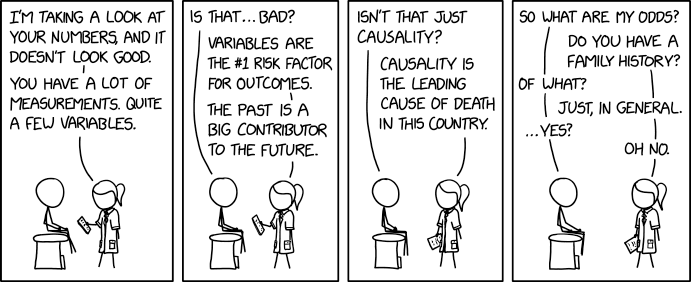
LIVE DEMO
See demo/01a_streaming_filter.md for the Polars basics walkthrough.
Lazy Execution & Streaming Patterns
LazyFrame methods
Most of this lecture uses a LazyFrame pipeline (pl.scan_* → ... → collect/sink). If you learn these methods, you can read almost every Polars example we write this quarter.
| Goal | Method | Notes |
|---|---|---|
| Inspect columns + dtypes | .collect_schema() |
Preferred for LazyFrame; avoids the “resolving schema is expensive” warning |
| See the query plan | .explain() |
Helps you spot joins/sorts and confirm pushdown |
| Keep only columns you need | .select([...]) |
Enables projection pushdown |
| Filter rows early | .filter(...) |
Enables predicate pushdown |
| Create/transform columns | .with_columns(...) |
Use expressions (pl.col(...), pl.when(...)) instead of Python loops |
| Aggregate to a target grain | .group_by(...).agg([...]) |
Often do this before joining large tables |
| Combine tables | .join(other, on=..., how=...) |
Know the grain to avoid many-to-many explosions |
| Collect results | .collect(engine="streaming") |
Streaming helps when the plan supports it |
| Write without loading into Python | .sink_parquet("...") |
Writes directly to disk from the lazy pipeline |
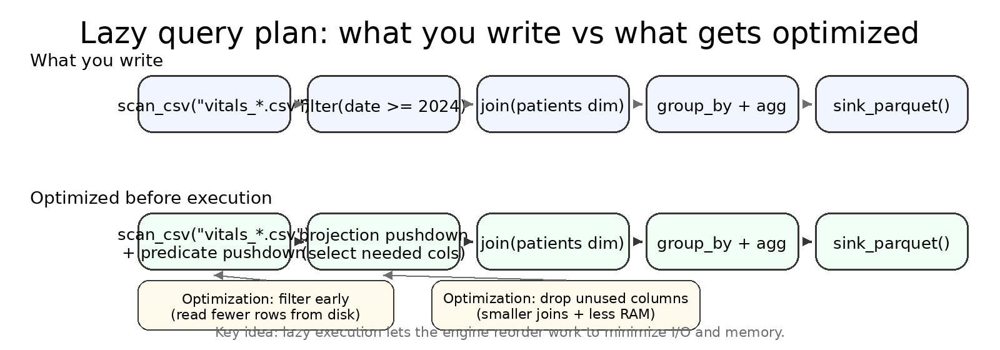
LazyFrame.explain() and .collect(engine="streaming")
explain() prints the optimized plan so you can spot scans, filters, joins, and aggregations.
== Optimized Plan ==
SCAN PARQUET [data/labs/*.parquet]
SELECTION: [(col("test_name") == "HbA1c")]
PROJECT: [patient_id, test_name, result_value]
JOIN INNER [patient_id]
LEFT: SCAN PARQUET [data/patients/*.parquet]
RIGHT: (selection/project above)
AGGREGATE [age_group, gender]
[mean(result_value)]Format varies by Polars version; look for scan -> filter -> join -> aggregate.
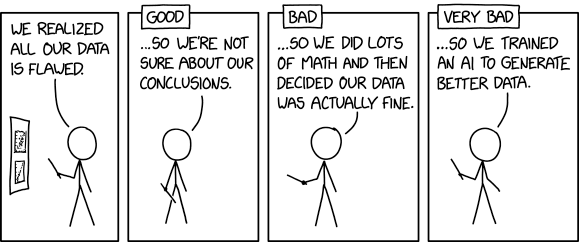
Lazy plans shine once you chain multiple operations: the engine reorders filters, drops unused columns, and chooses whether to stream.
Diagnose and trust the plan
query.explain()outlines scan → filter → join → aggregate so you can spot expensive steps.query.collect(engine="streaming")opts into streaming; Polars swaps to an in-memory engine only when necessary (e.g., global sorts)..sink_parquet("outputs/summary.parquet")writes directly to disk without loading the DataFrame into Python.
collect() and sink_parquet()
collect() loads a LazyFrame into a DataFrame in memory. sink_parquet() writes straight to disk without loading into Python.
Reference Card: Collecting and sinking
collect(): execute and return a DataFrame (in memory)collect(engine="streaming")/collect(streaming=True): stream when possiblesink_parquet(path): write without loading into Pythonpl.read_parquet(path): eager read for spot checkswrite_csv(path): DataFrame -> CSV after collect
Code Snippet: Stream, then write
result = query.collect(engine="streaming")
result.write_parquet("outputs/summary.parquet")
result.write_csv("outputs/summary.csv")
query.sink_parquet("outputs/summary_sink.parquet")
check = pl.read_parquet("outputs/summary.parquet")
check.describe()to_pandas()
Sometimes the fastest path to compatibility is converting to pandas for plotting or library support.
“
AK-47pandas.The very best there is.When you absolutely, positively got tokill every motherfucker in the roombe compatible with everything, accept no substitutes.” - Jackie Brown
Reference Card: to_pandas
- Method:
.to_pandas() - Purpose: Convert a Polars
DataFrameto pandas for compatibility - Note: Use after filtering/aggregating to keep the pandas DataFrame small
Code Snippet: Convert for plotting
import altair as alt
df = query.collect(engine="streaming")
plot_df = df.to_pandas()
alt.Chart(plot_df).mark_line().encode(
x="timestamp:T",
y="avg_hr:Q",
).properties(width=600, height=250)SQL with SQLContext
Polars can run SQL over lazy frames. This is a thin layer over the same optimizer, so you still get pushdown and streaming when the plan supports it.
NOTE: Polars SQL is not a full-featured SQL engine; it covers common patterns (SELECT, WHERE, GROUP BY, JOIN) but lacks advanced features (CTEs, window functions, etc.). We will cover SQL in more detail next week.
Reference Card: SQLContext
- Create:
ctx = pl.SQLContext() - Register:
ctx.register("table_name", lazy_frame) - Execute:
query = ctx.execute("SELECT ...")(returns aLazyFrame)
Code Snippet: SQL-style query, lazy execution
import polars as pl
ctx = pl.SQLContext()
ctx.register("vitals", pl.scan_parquet("data/vitals/*.parquet"))
query = ctx.execute(
\"\"\"
SELECT patient_id, AVG(heart_rate) AS avg_hr
FROM vitals
WHERE timestamp >= '2024-01-01'
GROUP BY patient_id
\"\"\"
)
print(query.explain())
result = query.collect(engine="streaming")
result.describe()sort() and sample()
Sorting can force a full in-memory load. Sampling is cheap after collection and helps with quick visuals.
Reference Card: Ordering + quick checks
sort([...]): global order, can break streamingsample(n=..., shuffle=True): take a subset after collectestimated_size("mb"): quick size check on a DataFrame
Code Snippet: Small sanity sample
df = query.collect(engine="streaming")
sample = df.sample(n=2000, shuffle=True).sort("timestamp")
print(sample.estimated_size("mb"))Streaming limits (when streaming won’t help)
Streaming is powerful, but not magic. Some operations force large shuffles or require global state.
Common “streaming-hostile” patterns:
- Global sorts and “top-k” style operations that need to see all rows.
- Many-to-many joins (or joins after a key exploded) that produce huge intermediate tables.
- Some window functions / rolling calculations that need overlapping history.
- Wide reshapes like pivots that increase the number of columns dramatically.
When this happens:
- Reduce columns early (projection), filter early (predicate), and aggregate to the target grain before joins.
- Write intermediate outputs (Parquet) at stable checkpoints so you don’t recompute expensive steps.
Reference Card: Lazy vs eager
| Situation | Use eager when… | Use lazy when… |
|---|---|---|
| Notebook poke | You just need .head() |
You’re scripting a repeatable job |
| File size | File < 1 GB fits in RAM | Files are globbed or already too large |
| Complex UDF (Python per-row function) | Logic needs Python per row | You can rewrite as expressions |
| Joins/aggregations | Dimension table is tiny | Fact table exceeds RAM |
Code Snippet: Multi-source lazy join
import polars as pl
patients = pl.scan_parquet("data/patients/*.parquet").select(
["patient_id", "age_group", "gender"]
)
labs = pl.scan_parquet("data/labs/*.parquet").filter(
pl.col("test_name") == "HbA1c"
)
query = (
labs.join(patients, on="patient_id", how="inner")
.group_by(["age_group", "gender"])
.agg(pl.mean("result_value").alias("avg_hba1c"))
)
result = query.collect(engine="streaming")LIVE DEMO
See demo/02a_lazy_join.md for the lazy-plan deep dive.
Building a Polars Pipeline

Good pipelines make the flow obvious: inputs -> transforms -> outputs. The visuals below map to that flow.
Pipeline anatomy: inputs -> transforms -> outputs
flowchart LR
subgraph inputs["Inputs"]
config["config.yaml<br/>paths, filters, params"]
sources["Raw Files<br/>CSV / Parquet / glob"]
end
subgraph transforms["Transforms (Lazy)"]
scan["scan_*()<br/>build LazyFrame"]
filter["filter()<br/>predicate pushdown"]
select["select()<br/>projection pushdown"]
join["join()<br/>combine tables"]
agg["group_by().agg()<br/>aggregate"]
end
subgraph outputs["Outputs"]
parquet["Parquet<br/>downstream pipelines"]
csv["CSV<br/>quick inspection"]
logs["Logs<br/>row counts, timing"]
end
config --> scan
sources --> scan
scan --> filter --> select --> join --> agg
agg --> parquet
agg --> csv
agg --> logs- Inputs + config: define what to scan, which columns to keep, and filter criteria.
- Transforms: lazy expressions that stay pushdown-friendly—nothing executes until collect.
- Outputs + logs: always emit both Parquet (for downstream) and CSV (for quick checks), plus row counts and timing for reproducibility.
Memory profile: streaming vs eager
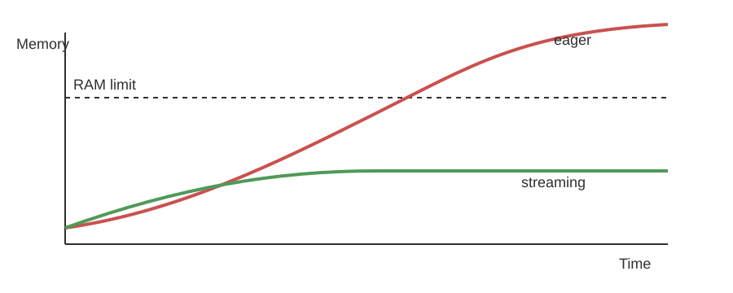
Streaming stays bounded; eager loads can spike past RAM.
Monitor early runs
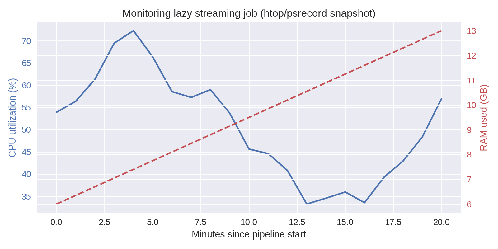
Optional: a real monitor helps confirm the memory curve above and catch runaway steps.
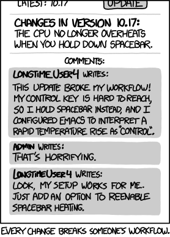
Pipelines are as much about reproducibility and debugging as raw speed.
Put the pieces together: start lazy, keep everything parameterized, and stream the final collect.
Checklist: from pandas crash to Polars pipeline
Methodology: config-driven pipeline
- Config-driven: all file globs, filters, and output paths live in YAML.
- Three phases: load (scan + cast) → transform (joins + groupby) → write artifacts.
- Artifacts: always write both Parquet (for downstream pipelines) and CSV (for quick inspection).
- Sanity checks: row counts, schema, and “does the output look plausible?” before you ship results.
Code Snippet: yaml-driven pipeline
## config/vitals_pipeline.yaml
name: Vitals Summary Pipeline
description: Aggregate patient vitals by facility and month
inputs:
vitals:
path: "data/vitals/*.parquet"
columns: ["patient_id", "facility", "timestamp", "heart_rate", "bmi"]
encounters:
path: "data/encounters/*.parquet"
columns: ["patient_id", "facility", "encounter_date"]
filters:
facilities: ["UCSF", "ZSFG"]
date_range:
start: "2024-01-01"
end: null # no upper bound
transforms:
- id: join_encounters
type: join
left: vitals
right: encounters
on: ["patient_id"]
how: inner
- id: aggregate
type: group_by
keys: ["facility", "year", "month"]
aggregations:
- column: heart_rate
function: mean
alias: avg_hr
- column: bmi
function: mean
alias: avg_bmi
- column: patient_id
function: count
alias: num_patients
outputs:
parquet: "outputs/vitals_summary.parquet"
csv: "outputs/vitals_summary.csv"
log: "outputs/vitals_summary.log"
settings:
engine: streaming
compression: zstd## pipeline.py - loads config and executes
import yaml
import polars as pl
from pathlib import Path
def run_pipeline(config_path: str):
config = yaml.safe_load(Path(config_path).read_text())
# Load inputs as lazy frames
vitals = pl.scan_parquet(config["inputs"]["vitals"]["path"])
encounters = pl.scan_parquet(config["inputs"]["encounters"]["path"])
# Apply filters from config
facilities = config["filters"]["facilities"]
start_date = config["filters"]["date_range"]["start"]
query = (
vitals
.filter(pl.col("facility").is_in(facilities))
.filter(pl.col("timestamp") >= pl.datetime.fromisoformat(start_date))
.join(encounters, on="patient_id", how="inner")
.group_by(["facility", pl.col("timestamp").dt.year().alias("year"),
pl.col("timestamp").dt.month().alias("month")])
.agg([
pl.mean("heart_rate").alias("avg_hr"),
pl.mean("bmi").alias("avg_bmi"),
pl.len().alias("num_patients"),
])
)
result = query.collect(engine=config["settings"]["engine"])
result.write_parquet(config["outputs"]["parquet"])
result.write_csv(config["outputs"]["csv"])
return result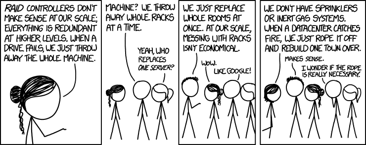
The same flow scales up; the orchestration just gets bigger.
Reference Card: Pipeline ergonomics
| Task | Command | Why |
|---|---|---|
| Run script with config | uv run python pipeline.py --config config/pipeline.yaml |
Keeps datasets swappable |
| Monitor usage | htop, psrecord pipeline.py |
Catch runaway memory early |
| Benchmark modes | hyperfine 'uv run pipeline.py --engine streaming' ... |
Compare eager vs streaming |
| Validate outputs | pl.read_parquet(...).describe() |
Confirm schema + row counts |
| Archive artifacts | checksums.txt, manifest.json |
Detect drift later |
Code Snippet: CLI batch skeleton
import argparse
import logging
import polars as pl
from pathlib import Path
logging.basicConfig(level=logging.INFO, format="%(levelname)s %(message)s")
parser = argparse.ArgumentParser(description="Generate vitals summary")
parser.add_argument("--input", default="data/vitals_*.parquet")
parser.add_argument("--output", default="outputs/vitals_summary.parquet")
parser.add_argument("--engine", choices=["streaming", "auto"], default="streaming")
args = parser.parse_args()
query = (
pl.scan_parquet(args.input)
.filter(pl.col("timestamp") >= pl.datetime(2023, 1, 1))
.group_by("patient_id")
.agg([
pl.len().alias("num_measurements"),
pl.median("heart_rate").alias("median_hr"),
])
)
result = query.collect(engine=args.engine)
Path(args.output).parent.mkdir(parents=True, exist_ok=True)
result.write_parquet(args.output)
logging.info("Wrote %s rows to %s", result.height, args.output)LIVE DEMO
See demo/03a_batch_report.md for a config-driven batch run with validation checkpoints.